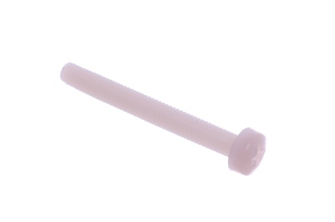
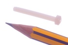
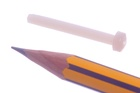

M3 x 25 mm Nylon Screw Cross Head - NN25

Summary
Name: M3 x 25 mm Nylon Screw Cross Head
ID: NSCR-M3-X-25-70
Hex ID: NN25
WebPage: https://github.com/oomlout/oomlout-OOMP/wiki/NSCR-M3-X-25-70
Short URL: http://oom.lt/NN25
Revision History: https://github.com/oomlout/oomlout-OOMP/blob/master/parts/NSCR-M3-X-25-70/
| Type |
Size |
Color |
Description |
Index |
NSCR
Nylon Screw |
M3
M3 |
X
|
25
x 25 mm |
70
Cross Head |
Images
 

About
This part is awaiting a description.
Specifications
| Info |
Value |
| Type |
Nylon Screw |
| Size |
M3 |
| Description |
x 25 mm |
| Index |
Cross Head |
Extra Details
Spotted a mistake, want to add more? Let us know oomp@oomlout.com
All images and resources are licensed [CC BY-SA] unless otherwise stated (ie. the datasheets)